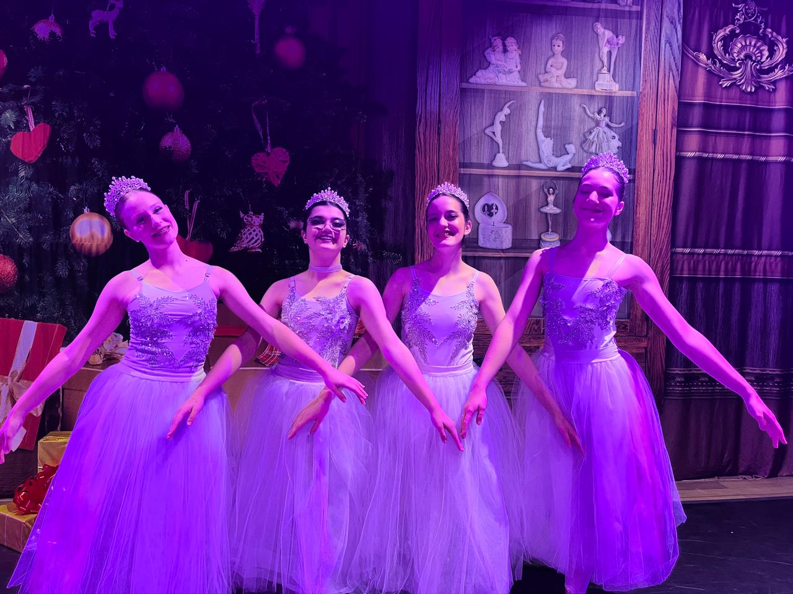

Meus Projetos

Dança
O ballet é uma das artes que mais admiro e pratico com dedicação
Musica
A música sempre teve um papel importante na minha formação pessoal e artística.
Literatura
A leitura é uma das minhas maiores paixões, pois me transporta para universos completamente novos e me permite viver várias histórias em uma só vida.